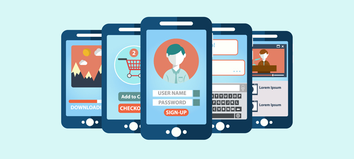

definicion
Cuando hablamos de usabilidad en aplicaciones móviles hacemos referencia a la facilidad con la que los usuarios pueden interactuar con la app y hacer uso de ella.
De este modo, se engloba la capacidad de cualquier individuo para realizar la acción deseada en la app móvil sin complicaciones, la posibilidad de cumplir el objetivo perseguido de forma espontánea y la sencillez de navegar por la plataforma intuitivamente.
malas ideas de usabilidad en las apps moviles
Navegación escondida
Iconos por todos sitios
Intentar diseñar algo perfecto a la primera
Pedir permisos justo al empezar
Hacer puntuar a los usuarios la app en su primer uso
Usar terminología específica en la interfaz
Dejar estados vacíos
Intentar llevar a los usuarios a un navegador
buenas funciones de usabilidad en apps moviles
Adaptarse a las nuevas versiones de los sistemas operativos
Utilizar una interfaz simple
Seguridad
Funcionamiento offline de la App
Actualizaciones periódicas de la App
Opciones de personalización
Corrección de errores y bugs
El sistema de búsqueda
top 5 de apps con mejor funcionalidad/usabiidad
Airbnb AirBnb es nada menos que un gigante en la industria hotelera con operaciones en más de 190 países. En consecuencia, la empresa ha creado una aplicación que está disponible en todas sus ubicaciones y aún presenta una experiencia de usuario estelar. Los desafíos para una aplicación móvil que se usa en áreas geográficas tan diversas incluyen la diferencia en las percepciones de UX de varias culturas alrededor del mundo. La aplicación de Airbnb es una lección de diseño de UX que predica el sutil valor de la simplicidad. La aplicación espera que sus usuarios solo contribuyan en términos de información personal y preferencias para obtener resultados.
uberUber es el elemento básico de otro usuario que facilita pedir un viaje. Los usuarios solo necesitan ingresar su ubicación, y la interfaz de usuario de la aplicación es lo suficientemente rápida como para proporcionar una lista de lugares en los que han estado recientemente para facilitar la grabación rápida. Los usuarios pueden rastrear sus viajes antes de que lleguen e incluso enviar mensajes a su conductor.
canvaLa aplicación Canva permite a los usuarios diseñar gráficos nuevos en sus teléfonos móviles a través de su alegre experiencia de usuario. Una aplicación alojada en una plataforma de diseño para personas que no son diseñadores permite a los usuarios elegir entre una amplia selección de plantillas y realizar ediciones de diseño, todo en segundos. Con movimientos fáciles de usar como pellizcar, deslizar y tocar, los usuarios pueden navegar rápidamente por la aplicación Canva.
humanCon una cobertura de más de 900 ciudades de todo el mundo, Human es una aplicación de fitness con un elemento social. La aplicación presenta estadísticas diarias de estado físico de la ciudad, junto con actualizaciones en tiempo real sobre el estado físico. Human es conocido por su incorporación fluida con registro simplificado, seguimiento de actividad continuo las 24 horas, los 7 días de la semana y varias otras características novedosas.
CourseraLa aplicación Coursera permite a los estudiantes obstinados adquirir nuevas habilidades y conocimientos sin tener que hacer un agujero en sus bolsillos convenientemente. Con un diseño suave y simple, fácil navegación, más de 1000 cursos para elegir y módulos de fácil acceso, la aplicación alcanza todos los puntos para el éxito.

conclusiones
como conclusion creo que las apps moviles si estan basadas en la usabilidad de los usuarios ya que es la base de una buena experiencia para el usuario